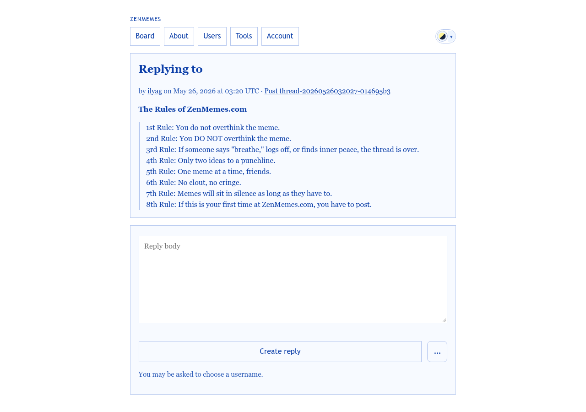
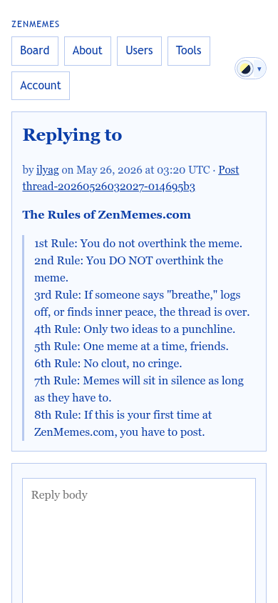

The standalone reply page. Every “Reply” link points here today. After the redesign it is the fallback for no-JS and deep links; the inline dock (mockup 3) handles normal replies.
templates/pages/compose_reply.php · partials/reply_form.php
data-created-post-id behavior.
